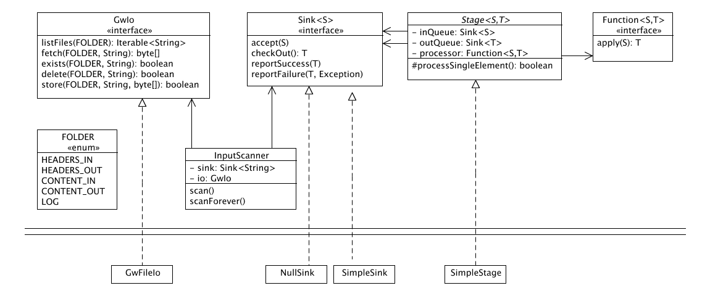

Developer's Guide
Posted December, 2007
The Google Calendar Connector Plugin is a framework to connect a Microsoft Exchange 2003 server to other Mail and Calendaring systems. While getting information out of Exchange is a well documented process, there has not really been a cookie-cutter way to make the server query for external information, such as free/busy information of another Calendaring system. This document describes an approach to resolving this issue.
Contents
About This Document
Audience
This document is for developers. To make best use of its content, a basic familarity with UML and Java 5 concepts is recommended.
For More Information
To get more information about the Groupwise API, please take a look at the Novell Groupwise 5.5 Administration Guide. For additional inspiration on how this software could be used in real business environments, please see also this great Exchange 2000 and Novell GroupWise Coexistence and Migration paper from Microsoft.
Architecture
General idea
Microsoft's connector uses the Novell Groupwise API to communicate with the external server. This API is openly documented and is based on a file-based protocol. If a consumer of the API has a request, he or she writes the request into a human-readable textfile and stores that in a particular folder. If the request requires any additional data, such as mail attachments for outgoing mails, these are also uploaded to a special folder. Groupwise scans the incoming folder for new commands, executes them and store the result (again in human readable form) in an outgoing folder. The consumer of the service scans that folder for responses and does with them whatever he or she wants.
Originally, it looked as if the file communication had to happen through an Novell directory server (NDS), but it turned out that Exchange could be configured to use a local directory on the file system instead. Once that fact was established, it was just a matter of implementing a program that scans the folder for incoming commands and returns the responses in the format that the Exchange side expects. Also, by doing some additional configuration tweaks on the Exchange side, it was possible to reduce the necessary messages exchanged for the initial implementation: only "fetch user list" and free/busy inquiries were necessary, since invite passing and email communication could be handled via SMTP.
Detailed Design
The overall objective is relatively simple: we have to write a program that runs on a single server, scans the incoming folders, processes the messages, and writes the responses. Since the software is supposed to run in environments with many thousand users, high concurrency and efficiency is key. It is assumed that none of the posted requests were dependent on each other (in other words, they could be executed out of sequence and in parallel). Also, there are several operations that are I/O dependent (scan the folder, read the commands, interface to the external system, write the responses), so we have to make sure that a temporary slowness in any of these dependencies will not hold up the other processes.
Considering these requirements, a SEDA architecture
was chosen. SEDA allows the programmer to divide request processing into separate Stages. Each stage takes the result of a previous stage, processes it and hands it over to its successor. The following image shows how the Google-Calendar-Connector-Plugin was split up:

At the top of the assembly line, a class called InputScanner monitors the incoming folder for new files. If it finds a new file, it enters the filename into the first stage. The InputScanner does not parse the file or loads it over the network -- it is the only process that cannot be parallelized and therefore should do as little as possible. In this design. the queue that holds the elements for the following stage is called a Sink. A Sink is always used by two stakeholders: the object feeding it with events to process and the stage processing the events. Like most objects in this design, Sinks are generic and can function on any object type. However, the type of a sink always needs to match the type of event expected by the particular stage.
There are four stages within the code:
- The parsing stage loads the incoming commands from the file system, interprets them and converts them into an object structure (GwCommand).
- The processing stage converts the command objects into API (or web) calls of the system we connect to (e.g. Google Apps) and converts the result back into a result digestible by the Exchange connector (class Response). It is anticipated that this stage will usually take the longest time (communication over the internet), so it should be given the most resources (threads) to handle the load.
- The responding stage converts the response objects into strings and writes them into the outgoing folder. It then forwards the original command into the final stage.
- The cleanup stage determines from the original command the location of all submitted incoming files and deletes them from the file system.
The final stage does not return any result worth processing. The sink its results are fed in is therefore a "null-sink", comparable to the terminator at the end of a daisy chain of SCSI devices.
While implementing the design idea, the main goals is to keep the structure very simple while maximizing testibility.
The following image shows the general approach:

The main participants of the design are
- The GwIo interface, an abstraction of file based operations.
- The Sink interface for enquing messages (accept-method) and retrieving them from the queue (checkOut-method). Once a message has been processed, the sink is notified by invoking reportSuccess(). If message processing failed, for example due to network problem, reportFailure() is called instead. The Sink may then decide to put the event back into the queue. Concrete implementations may decide to either return null if no event exists or to block the requesting Thread until a new event becomes available. The SimpleSink does the latter. Any implementation should however never block a Thread trying to put an object into the sink.
- The Function interface (part of the Google Collections Library) that acts as a strategy to transform events from its original status into its new status. Functions are supposed to be free of side-effects, thus allowing to invoke the same function object many times in parallel. In this context, we neither consider I/O operations (such as reading files) nor changes to the mail server due to a function call a side effect.
- The Stage class that takes two sinks and a function and contains the logic for performing a single transformation. Concrete subclasses (SimpleStage) add the logic of handling many events in parallel.
When the framework was designed, we kept in mind that Google Calendar would only be one of many potential clients to connect to.
The initial implementation was split in two stages: the first stage, a fake in-memory mail server communicated with the Exchange connector, thus ensuring that there was no implicit dependency on
the Google backend. In the second stage, the fake server was replaced by the proper communication with Google apps through the GData API.
Both implementations are part of the open-sourced code and can be found in subpackages of com.google.calendar.interoperability.connectorplugin.impl.
To minimize the effort in supporting different implementations, it is paramount that the amount of wasted code is minimized. For instance, if we put considerable effort into getting the free/busy response format right, we do not want to have to redo that effort, but rather make it generally available. For that reason, the processing was modelled as shown in the following image:

Incoming commands are expressed by a hierarchical object structure. A general class called CommandHandler manages the logic of processing them by dispatching them by type to a set of registered subhandlers. These subhandlers are the only classes that are specific to the concrete implementation (mock vs gdata) and thus can be easily exchanged. The subhandlers will return an instance of GwResponse or their subclasses. The contract of a GwResponse essentially states that it needs to provide the ability to
- return the original GwCommand it was created for
- be able to render its content in a way that the Exchange connector understands, or advise not to be rendered
- be able to render its content in a way that can be logged as a file
Most response implementations are a subclass of TemplateResponse, a class that provides a very simple templating language to format the response. As a general rule, if additional data has to be provided to populate a response, this has to be done in an implementation-agnostic way. For instance, the FreeBusyResponse has a method that accepts a time interval in UTC to model blockout times. How these times are computed is up to the conrete implementation. How these times are formatted however stays the same in all cases.
Implementation Details
Third party libraries
The Google Calendar Connector Plugin uses the following external libraries and tools, either directly or as part of the build process:
- GData Java Client is used to implement the connection to Google Calendar. It is not needed when connecting to a different system.
- Google Collections Library contains some basic tool classes and interfaces that come in handy. In particular, we use the Function interface, the Nullable annotation and the Preconditions class (for checking null conditions on input parameters).
- JUnit classes are only used in the
javatestssubfolder. The application itself compiles without them, but they are the foundation of running all the unit tests. - JMock is a mocking framework that is extensively used in our unit tests. This is possible since most of our classes rather depend on interfaces than concrete classes and thus can be tested very well in isolation. Like Junit, the application itself compiles without them.
- Ant is the tool we have chosen for our build scripts. It is not directly used by the code, but good luck trying to build the project without it.
- JSmooth is like ant another tool used in the build process. It provides an ant task that can be used to wrap a java executable into a windows binary. JSmooth is used to wrap the compiled code into a Windows Service, thus making the installation easier for the end user. The code itself has no direct dependency on JSmooth and can be used perfectly fine without it.
Connecting to a new system
Making use of an open source package, especially if it is not a general purpose library, sometimes require a lot of up-front work to understand the intrinsics of the code. We tried our best to make this part as transparent as possible by limiting the classes most developers would need to touch to a minimum.
Connecting to a new system, for example a different Calendar server, is not very hard. All that is needed is to create a processor (an implementation
of Function<GwCommand, GwResponse>) and replace the appropriate SEDA stage with it. See the code after the "Building Stage 2" comment in
class com.google.calendar.interoperability.connectorplugin.Main for more details.
To make life easier, we have created a class called CommandHandler that can be used as a registry to build processors from a set of utilities.
For free/busy inquiries, there is also an abstract base class called BasicSearchHandler. These classes can all be found in the package
com.google.calendar.interoperability.connectorplugin.base. They are used by both connection implementations shipped with the sources
(see packages com.google.calendar.interoperability.connectorplugin.impl.google and com.google.calendar.interoperability.connectorplugin.impl.mock).